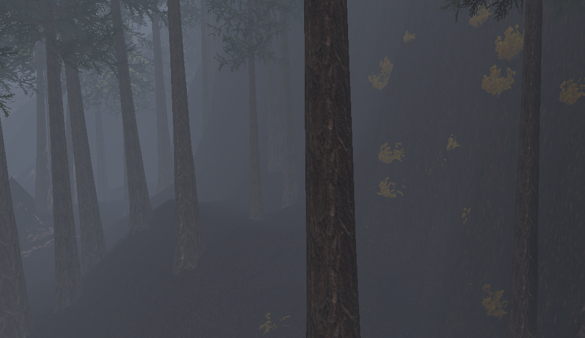

Owen Spreadbury
Paranormal Factory
Patient R-21
Design Week
Food Truck Legends
Multimesh Vegetation

When creating the forest outside of the large office complex, I needed to be able to create many trees without destroying the game's performance.